Maintaining a Healthy DITA Project
How should a Happy and Healthy Documentation Project Look Like?
Do you have a Healthy Project?
-
Focus on writing and not on workflow.
-
Involve peer-reviews, SMEs and end users.
-
Easy start for first-time contributors.
-
Easier produce deliverables and correct errors in older deliverables.
-
Allow for future evolution: more writers, more outputs, more content, more products.
Why do big companies use the DITA standard?
-
Standard means owning your content and no vendor lock-in (editing or publishing).
-
DITA works very well with topic-based authoring.
-
Lots of content reuse potential.
-
Reuse lowers translation costs.
DITA Doc Project Aspects
-
Storage
-
Workflow
-
Collaboration
-
Sharing Common Constraints (editing, validation, spell check dictionaries, ...)
-
-
Structure
-
Managing links and reusable content
-
-
Translation
-
Publishing (Producing Deliverables)
Storage
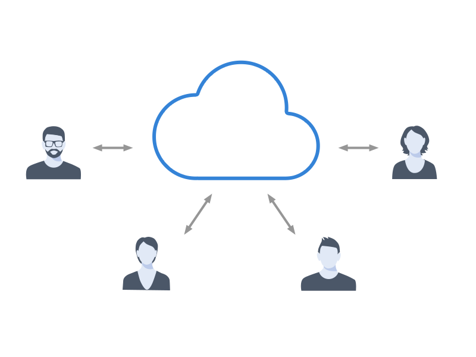
-
Commercial content management systems (CMS).
-
Open Source version control systems: Git, Subversion, CVS
Version Control
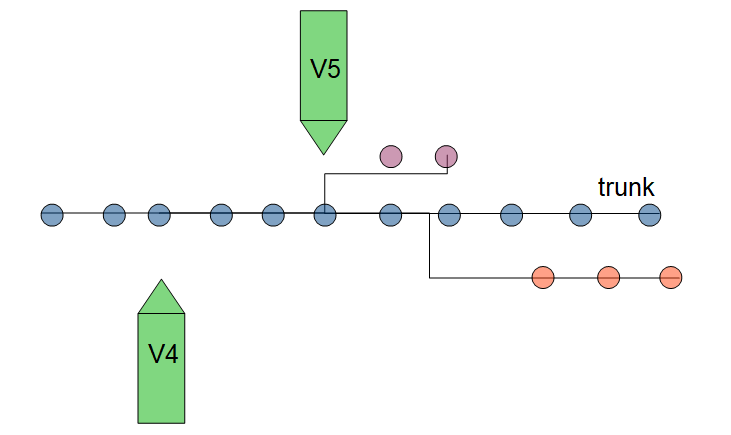
-
Ability to Tag Releases and Create Branches.
-
See history for resources.
Working with the storage system
-
Commercial CMSs – Remote editing, locking.
-
Open Source version control systems – Local working copies, no editing restrictions → conflicts.
Hint: Maybe you can use the same storage system as software developers in your company.
Collaboration and Workflow
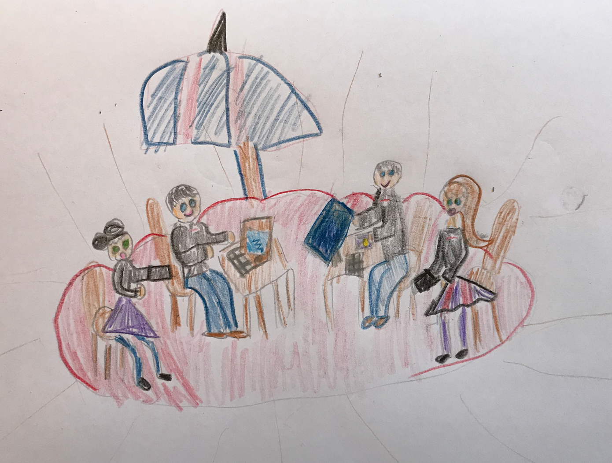
-
We invest a lot of time each day collaborating with our team or external collaborators.
-
Collaboration should be as comfortable as possible.
Workflow
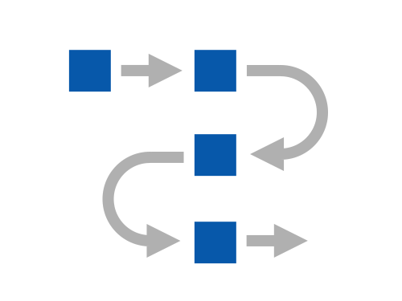
Issue tracking
-
Using workflow features in the CMS
-
Using issue management systems like Bugzilla, Atlassian JIRA or Trello.
- Tip: Linking the product development with the documentation development.
Issue Tracking Examples
Custom workflows
-
Documentation task specific workflow
-
Integrate QA and documentation in software development process
Issue tracking – Simple Documentation Workflow
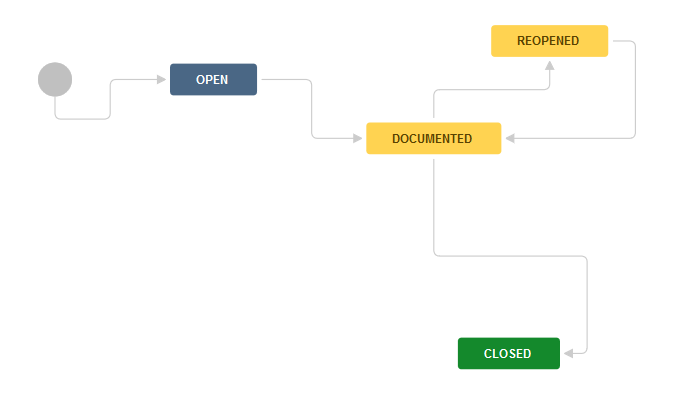
Issue tracking – Development and Documentation Workflow
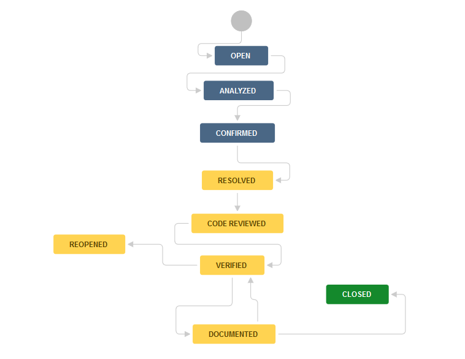
Issue Tracking and Storage Integration
Issue Tracker can provide a single place where you can monitor a ticket from start to end, including:
Issue description and details
-
Who worked on that issue
-
What was changed in the application
-
What was changed in the documentation
-
Who should be notified when issue is resolved.
Involving Subject Matter Experts
-
SMEs provide original content (DITA or Markdown or ...)
-
Let SMEs review the published output.
-
HTML with feedback forms
-
PDF with comments.
-
Formal review with web editing tool integrated with storage system.
-
Informal review DITA content using change tracking and comment capabilities
-
How can end users collaborate with us?
-
Send feedback via email/forum/phone.
-
Send feedback in the published HTML output.
-
Give feedback using an online DITA editing tool with comment-only capabilities.
Contribution Consistency
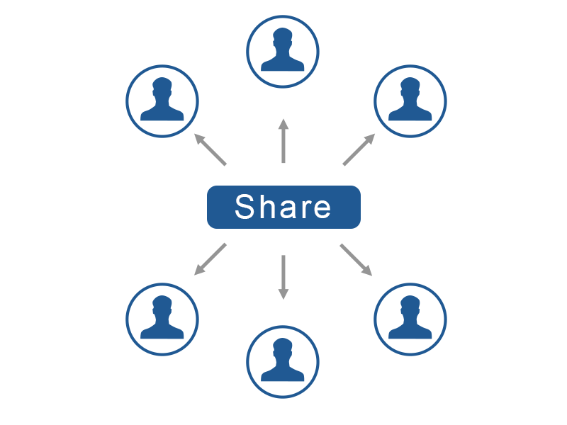
Sharing common settings between writers
-
Custom style guide.
-
Specific editing enhancements.
-
Specific validation settings.
-
Controlled attribute values.
-
Custom spell and auto-correct dictionaries.
-
Various other common preferences.
Custom Style Guide
The style guide is internal documentation about how to write documentation.
How can we remember what’s written in the style guide?
-
Searchable help output from internal style guide.
-
Find an automatic way to impose style guide rules when editing.
Automating Style Guide Rules
Schematron Checks to help Technical Writing
-
Schematron to add custom validation rules.
-
Schematron Quick Fixes to propose quick fixes for each custom error message.
Using the same terminology rules
-
Custom Spell dictionaries.
-
Custom auto-correct mappings.
-
Advanced terminology checkers like Acrolinx, HyperSTE or LanguageTools.
-
Building your own terminology checker using Schematron.
DITA Project Structure
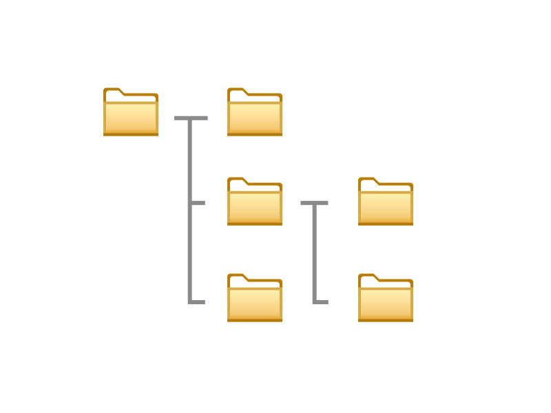
-
Organizing various resources in various folders
-
Some CMSs may not consider this relevant.
File and folder naming/organization conventions
-
By type:
-
Tasks/t_installation.dita
-
Concepts/c_profiler.dita
-
-
By semantics:
-
xslt_debugger/backmapping.dita
-
Managing Content Reuse
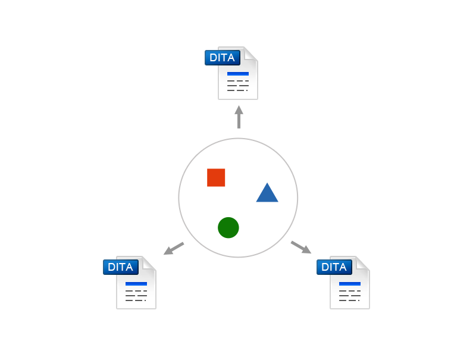
-
Separate folders containing reusable content.
-
Keep dictionaries of reusable components
-
Prefer indirect references (conkeyrefs)
Managing Links
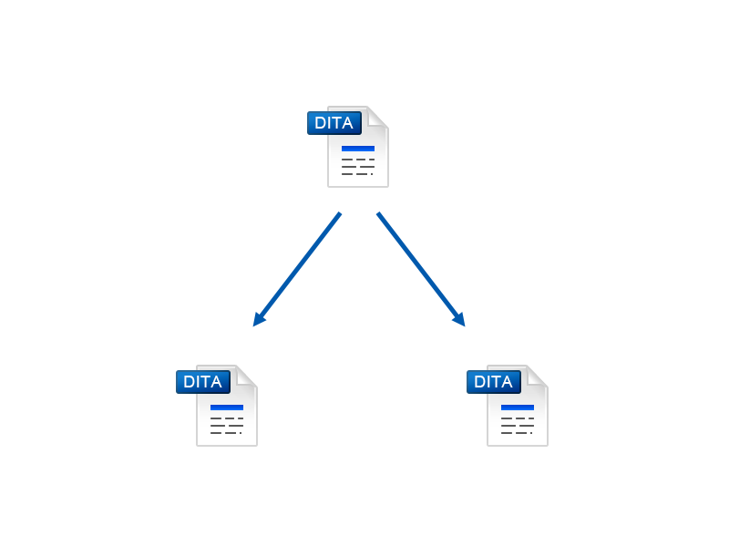
-
Prefer indirect links (key references)
-
Reuse link targets
-
Re-direct links depending on publication
-
Use relationship tables
Project-wide refactor operations
-
Convert between various topic types.
-
Rename or move one or more topics.
-
Change XML structure in topics from the entire project.
- Example: Change the value of a specific attribute.
Translation
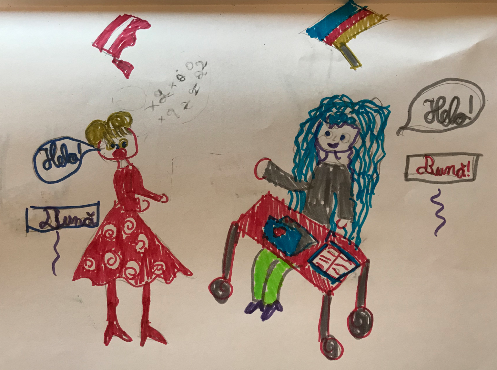
-
You create your content in the primary language using a DITA authoring tool .
-
Send a copy of the relevant DITA files to the localization service provider (LSP).
-
Receive translated DITA content back from (LSP).
Optimizing for translation
-
Use a controlled vocabulary (simplified English).
-
Avoid reusing inline elements other than product names.
https://lists.oasis-open.org/archives/dita/201301/msg00029.html
-
Avoid profiling/filtering content at inline level.
Publishing
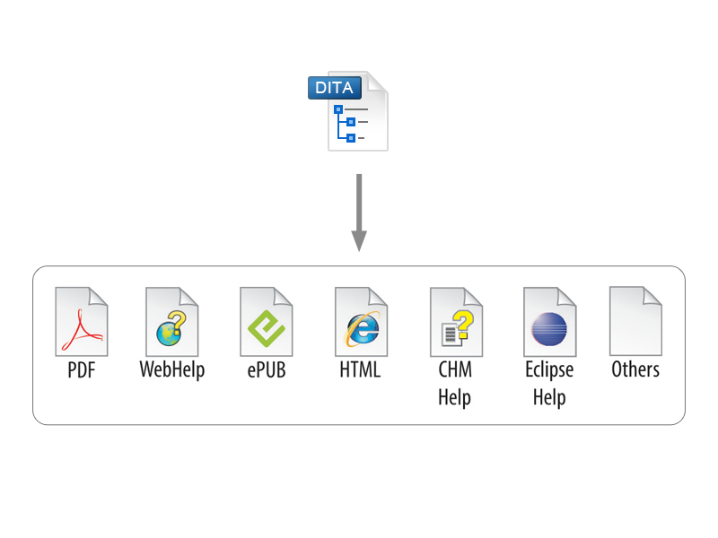
-
Map-wide Validation and Consistency Checks
-
Validate each topic according to DITA standard.
-
Check for broken links, key references and content references, missing images or referenced resources.
-
Check for broken links to remote web sites.
-
Check for broken links in the context of profiling filters.
Producing the deliverables
-
Checking the project before publishing.
-
Sharing publishing customizations
-
Automatic production of deliverables either via CMS or via an automated open source server (Jenkins).
Useful links
-
DITA Style Guide (by dr. Tony Self):
-
Intelligent Style Guide (by George Bina):
-
Oxygen XML Blog (Reuse, Linking, custom validation, sharing settings):
Conclusions
A healthy DITA project needs to:
-
Be Manageable.
-
Allow for scalability.
-
Allow for easy collaboration.
-
Allow for detection and correction of mistakes before the deliverables are published.
-
Allow for correction of mistakes after the deliverables are published.
But don’t panic if you do not have all the aspects of a project covered, your project does not need to be perfect, it needs to be perfectible.
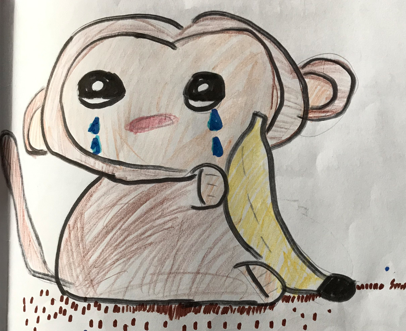